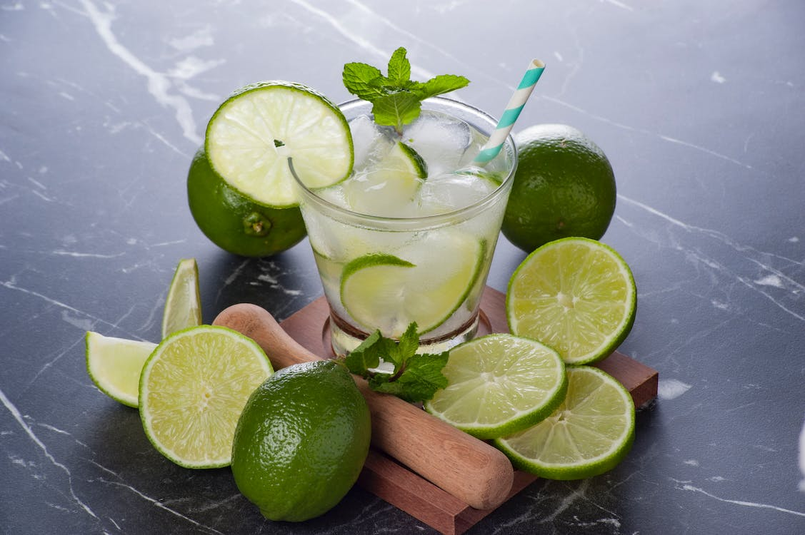

Time to honour my roots and finally show something you can ingest.
You will need:
- A lemon
- Two tablespoons of sugar
- Cachaça
- Some ice
Now you just have to follow the steps:
- Slice both of the tips of the lemon, then slice it vertically and take the central axis (it is called columela by the way) out. Now cut it in strips.
- Put the lemon strips and the sugar into a cup and press the juice out of the lemon with a muddler.
- Put the ice into the glass and fill the rest of it with cachaça.
- Mix it up nicely with a spoon or a shaker.
Now it is ready to be served! Drinky responsibly.
Preparation Time: 5 min.